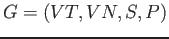

Siguiente: Gramática libre de contexto Subir: Glosario de términos Anterior: Ãrbol sintáctico Índice General
Una gramática es un cuádrupla , donde:
Los tipos de gramáticas generalmente vienen determinadas por los tipos de reglas de derivación que las componen.